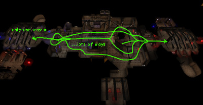

Mapping For Jailbreak/General Layout
General Layout
Where am I? It's too hard to release!
The first thing I am going to talk about is the general layout of a good Jailbreak map. Many maps (some of mine) suffer from players not knowing where they are or release switches being either too easy to defend, or too easy to attack. Mappers should make sure that, just like a CTF map, the route to both their base and the enemy base is made as obvious as possible. This can be done with things like team-coloured banners and decorations, team-coloured textures, team-coloured lighting, or even a team-coloured skybox! This is not to say go ahead and make all of your textures, meshes and lights fully saturated red/blue, as in some cases you may want to keep it subtle to match the theme of your map. Do make sure that you make team bases apparent in some way though, or it can result in players being confused as to where to go, and this is a bad thing in Jailbreak. Though, there is a compass in all versions of Jailbreak that points to either the enemy release switch or the players release switch (user-configurable), which helps, but shouldn’t be relied on fully. With layout, I’ve also found that it works best (produces the most fun and even-matched games) to have more routes in the centre and less near the release. This is where level design for Jailbreak differs from CTF. In CTF it often works well to have multiple routes in/out of a flag area with one or two high-risk areas in the middle that the flag carrier must go through (Hydro16, Orbital, Lucius, even Face). In Jailbreak however, it is the getting to the switch that counts, and not the getting back. If you have a release switch that is easy to get to via multiple routes, then it is going to be too easy to release. Some will say “but what about if you counteract that by having a chokepoint in the middle to defend”, and this is kind of true, but because of the Deathmatch-style gameplay that is mixed in with Jailbreak you will find that the attacking player is often already past the chokepoint anyway. This is not to say that those kind of layouts don't work -– but a more-routes-in-middle-less-routes-near-switch layout has the following advantage: It means that a lone player is able to defend his/her switch from multiple attackers successfully if they are good enough. It is very hard to do this with the other more-routes-near-switch-less-in-middle layout because, although the lone player can go to the centre of the map to defend, he/she will end up going after an attacker while another one runs past. If there is less routes near the switch, the player can defend it by themselves (if the right weapons are available). It sucks big-time if the last player is always going to be over-powered by the enemy. Having multiple routes in the centre of the map also means that the player can perhaps sneak by unnoticed if they are good… but it is still dangerous near the switch because one player could be the end of you! Whatever layout you decide to go for, it is always good to test (preferably with other human players) on an untextured, undecorated layout map first and see if it plays well -– if it does, then go ahead and use it! |
![[jailbreak-mapping-general-1-phobos]](images/jailbreak-mapping-general-1.jpeg) JB-Phobos][ is a good example of multiple routes in the centre and one route to the switch. 
JB-Gauntlet-III is also a good example. |

Previous: /Introduction – Next: /Jails